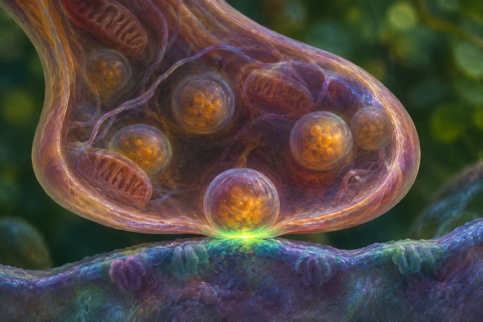
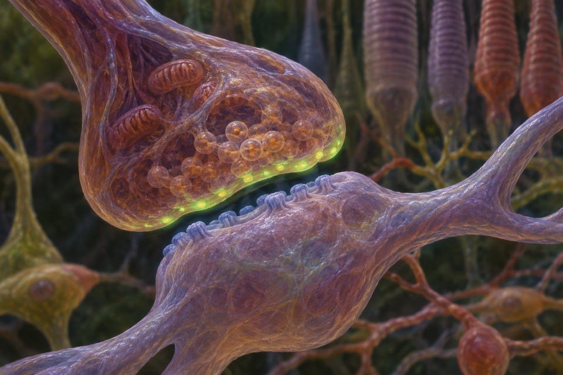
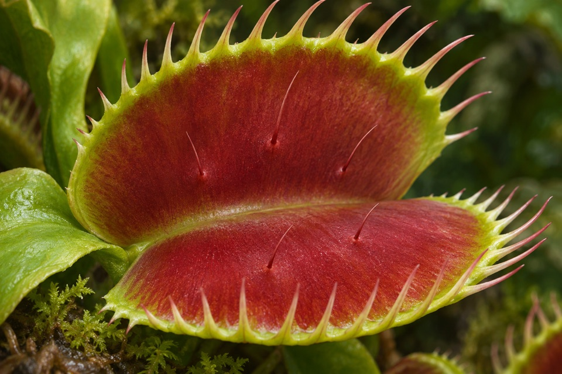
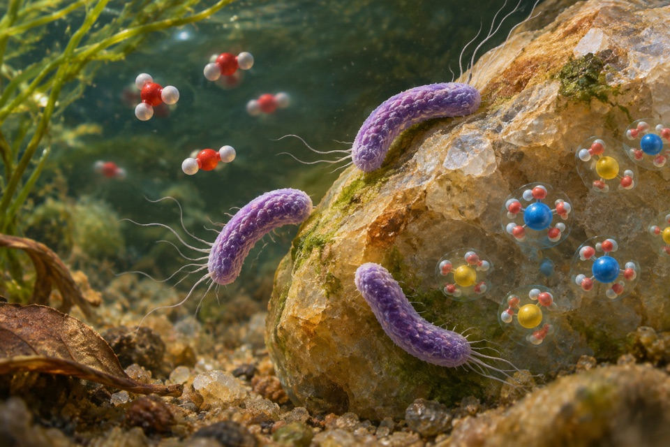
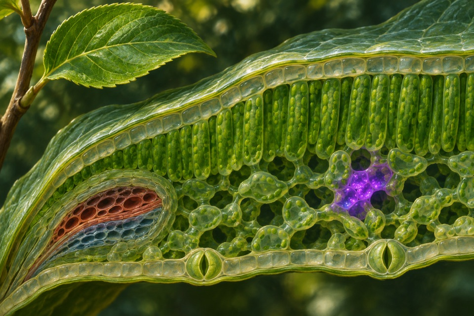

Module 01
pH-sensitive optical reporting of vesicle fusion
Measure activity-dependent fluorescence at secretory or synaptic terminals.
Evidence recordOpen any of the ten modules to see the reported observation, its sources, and the research questions still open.

Measure activity-dependent fluorescence at secretory or synaptic terminals.
Evidence record
Measure emitted-call frequency as returning-echo frequency changes.
Evidence record
Distinguish penetration behavior at a hard interface from baseline elongation and from calcium transport measured in yeast.
Evidence record
Follow ammonia loss, nitrite formation and archaeal growth together.
Evidence record
Track local glutamate-related fluorescence transients in neural tissue.
Evidence record
Measure localization accuracy and acoustic cues across elevation and azimuth.
Evidence record
Relate the timing of trigger-hair touches to calcium signal and trap closure as distinct readouts.
Evidence record
Measure nitrite oxidation to nitrate together with growth.
Evidence record
Measure relative, time-resolved dopamine-linked signal in a defined tissue.
Evidence record
Measure a channel response to heating separately from directional infrared detection.
Evidence record